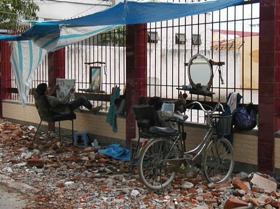
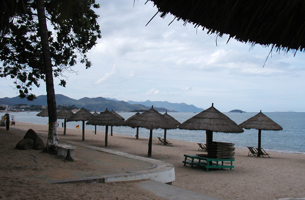
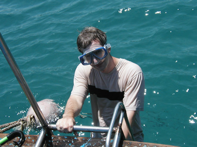
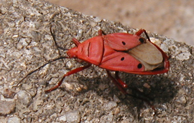

Viet Nam Trav-E-Logs©
| Nha Trang
sent 8 June 2003 |
 |
| back: Da Lat | Barbers in Nha Trang |
================================= I enjoy a little tongue in cheek. Well, maybe a LOT of tongue and cheek, as I find humor in the differences of day-to-day experiences. For instance, we expect a lot from the poor barber in most western societies. My goodness, here in S.E.Asia, if you want to make a little money, just start with the basics. Why would you need a sign? Or even a building? The above photo shows what I mean -- caught them resting between customers. Just think, no need to sweep up hair! =================================
May 20-22, 2003
Now it’s time to leave the refreshing air of Da Lat and head back down to the coast. The 8 AM bus arrives at our hotel at 7:45, and we are out of town by 7:52! About a half-hour down the road, while stopped at a gas station, the bus driver receives a call on his cellular phone, and hands it to me. He thinks I’m German, so I pass the phone off to Chris. Turns out a German couple on this bus had forgotten their money belt in the Dreams Hotel, and it was the proprietor trying to make arrangements to get it back to them. Just can’t say enough nice things about the Dreams Hotel.
The road passes the Dan Nhim Lake, reaching the Ngoan Muc Pass, where we drop 1000 yards to the coastal plain after a photo op stop. It’s gorgeous. Even in the bus, I have a good window seat. I’m thankful the bus is traveling in daylight. Next stop is at the Pok Long Ga Rai Cham Towers, ruins from the 13th century Cham culture that populated the central portion of Viet Nam. I plan on seeing more of the Cham culture during the next week.
Upon arrival in Nha Trang, the bus parks in front of a hotel. It’s mid-afternoon. Eager staff jump on the bus, sales pitch in full motion. This is the same hotel recommended by the Dreams Hotel, so we allow ourselves to be talked off the bus long enough to review the offering. For $10, Chris and I decide to share a room with private bath, and Air Conditioning, for it is a pretty nice place. Besides, a downpour just hit, and meandering around with a full pack during a heavy rain is not inviting.
The rain continues for almost 3 hours, which dampens our plans to arrange an island tour tomorrow. As it turns out, the only island trip we find is run by Mama Linh, and involves partying, singing, wine and entertainment. Not what either of us has in mind. We also hear about a river cruise, as well as a visit to Monkey Island where the primates have learned to forcibly remove any plastic bag carried by a human and investigate for possible food. So, tomorrow Chris and I sign up for a snorkeling trip on a dive boat that is a government joint venture. It is the only place where we get straight answers -- actually from an Austrian lady that works with the company. She says none of the 5 similar tours are bad, just subtle differences. Her boat has a closed deck area to get out of the sun. That's all I needed to hear.
Nha Trang is a pleasant beach town, and boasts to have the best diving and snorkeling in Viet Nam. Chris has never been snorkeling before, so this is the place to try, even though we have been warned that much of the coral has been dynamited, and with the recent rains, the visibility may only be 5 to 7 yards. On the boat, Chris selects a mask and fins that are actually in pretty good condition. The dive instructor tells us the first location will be best for fish, then we eat lunch, and the second location is better for coral. The captain has the boat tied up at a mooring buoy, and does not drop the anchor. Chris becomes excited as he enters the water, and meets his first fish face to face. We see a couple dozen species of fish, but nothing really large. He is instantly hooked on snorkeling. I only stay in the water about an hour, as I become chilled in the cool water.
 The crew cooks us lunch, and we all remark that it’s better than expected. Several types of fish, including one identified as tuna. Too bad it’s overcooked and dry. During lunch, Chris describes his experiences, and listens to the divers’ additional observations. We tell our stories about the various “world class” snorkeling locations. The Perentians were heavily developed after my visit there, but it sounds as if the coral is still vibrant. And the Togians will be wonderful for a long time if they can stop the dynamiting, because it’s very difficult to get there.
After lunch, I’m the first in the water at the “coral” location. The crew has advised me where not to go because of strong currents, and advised me not to swim completely around the island. Not more than 20 yards from the boat, the coral starts. It’s deep at first, but continues up to a depth of only 1 yard or so. A type of coral that looks like a huge toadstool I'm not sure I've seen before. Unfortunately, the water is rather murky, with a lot of trash and silt in suspension as well as covering much of the coral. It is still alive, but highly stressed, with little color. At the fringes of the designated location, I can see much broken coral, ostensibly the result of dynamiting. I did not hear any dynamiting, but many others claim to have heard it. Again, I only stay in the water about an hour, as I become chilled. But that’s two hours of swimming, and more than I’ve had in quite some time. And my urge to snorkel is somewhat abated.
 As we cruise back to shore, I notice my legs are sun burned. Then I remember the warning on the anti-malaria drug I’m taking, about increased sensitivity to sunlight. I spread a generous amount of cream on, but it’s too late. I’ll be itching and peeling for the next two weeks. And I consider purchasing some type of lightweight pants to cover up with during the next snorkeling stop -- something I’ve never needed to do in the past.
Chris has to speed up his touring of Viet Nam, and decides to take the night bus, as the day busses have been cancelled with our agency. I spend the next day walking the town with my camera, going to the Po Na Gar Cham Towers, and locating the famous “banana split shops” that were miss-located on two of three maps of town. The French left behind delicious bread, meals, and deserts too.
Now I am ready to take the night bus to Hoi An.
Enjoy!
Bill
------------------------------
Email me at the juno.com address "dancer2SEAsia"
"Travel is Fatal to Bigotry, Prejudice, and Narrow-minded ness" .... attributed to Mark Twain| next: Hoi An |
| back: Da Lat |